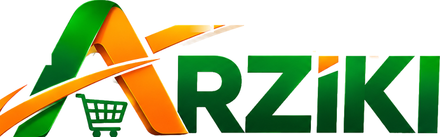
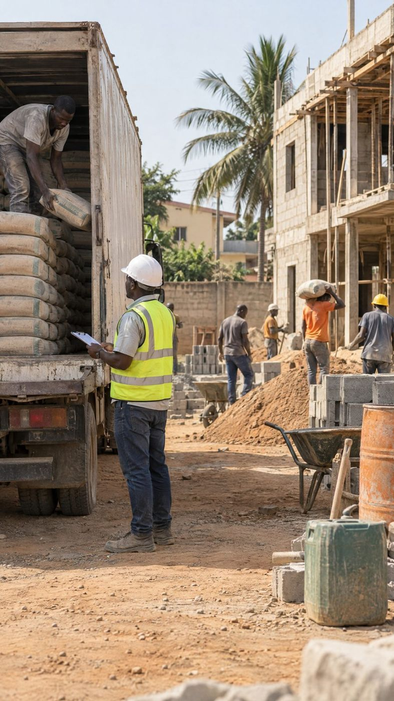

TéléchargerVous avez une commande ferme mais pas la trésorerie pour acheter la marchandise ? ARZIKI vérifie la commande, organise le financement de l'achat et suit l'opération jusqu'au paiement, sous le contrôle d'un notaire.
La Commande Financée en cinq étapes, de votre bon de commande jusqu'au partage de la marge.
Bon de commande de l'acheteur, devis du fournisseur, vos coûts. L'application calcule votre marge.
Nous contactons directement l'acheteur, contrôlons le fournisseur et les prix, et proposons les garanties adaptées.
Par le fournisseur, qui accepte d'être payé plus tard, ou par le Cercle Arziki, via le compte séquestre du notaire.
Chaque étape est suivie dans l'application, avec les documents.
L'acheteur paie sur le compte désigné, le fournisseur est réglé, puis la marge nette est partagée selon le contrat.

Opérés par NEXUS International : des experts pour préparer vos dossiers et former vos équipes.
Savoir en une semaine si votre projet est finançable, et comment.
25 000 FCFA
Un dossier solide pour une banque ou un investisseur. Commission de 2 % si le financement est obtenu.
150 000 à 500 000 FCFA
Les états financiers certifiés sont établis avec un expert-comptable agréé partenaire.
À partir de 100 000 FCFA
Dossier de crédit, gestion financière, états financiers, appels d'offres, garanties. Attestation remise.
Sessions à Lomé et à Kara
Aussi : projets structurés (mémorandum et modèle financier), grands projets avec arrangeur, accompagnement banque et crédit-bail. ARZIKI Carnet, l'outil de gestion des commerçants, arrive bientôt.
Un cercle privé de membres et de partenaires qui choisissent les opérations commerciales auxquelles ils participent. On y entre uniquement sur invitation ou après admission par un administrateur.
Opérations PME. Participation minimale de 500 000 FCFA.
Opérations PME et Entreprises. Participation minimale de 10 000 000 FCFA.
Toutes les opérations, chef de file possible. Participation minimale de 50 000 000 FCFA.
Chaque opération est encadrée par un notaire partenaire. L'application ne détient jamais l'argent : les fonds vont au fournisseur ou sur le compte séquestre du notaire.
| Montant de l'opération | Garanties proposées | Forme de l'acte |
|---|---|---|
| Moins de 5 M FCFA | Bon de commande écrit, paiement sur compte désigné ; caution du dirigeant si l'historique est faible | Contrat signé, copie au notaire |
| De 5 à 30 M FCFA | En plus : caution solidaire du dirigeant ; gage ou nantissement du stock ou du matériel | Contrat déposé chez le notaire |
| De 30 à 100 M FCFA | En plus : cession de créance ou délégation de paiement ; nantissement du fonds de commerce ou d'un compte ; caution d'un tiers solvable | Acte notarié, nantissements inscrits au RCCM |
| Plus de 100 M FCFA | En plus : hypothèque sur titre foncier ; assurance de la marchandise | Acte notarié, hypothèque inscrite au livre foncier |
Pour les entreprises, les membres du Cercle, les fournisseurs et les notaires. Version 1.1.0, publiée le 1er novembre 2026.
Android 6 ou plus récent. Fonctionne sur les téléphones d'entrée de gamme.
Ou essayer dans le navigateur. Équipe ARZIKI : console d'administration.
Le code reçu « par SMS » est toujours 123456.
| Profil | Connexion |
|---|---|
| Investisseur privé invité | code ARZ-DEMO-2026 avec le 90000071 |
| Membre du Cercle | 90000021 |
| Partenaire du Cercle | 90000031 |
| Entreprise | 90000011 |
| Fournisseur | 90000041 |
| Notaire | 90000051 |
| Candidat au Cercle | 90000061 |
ARZIKI signifie « prospérité » en haoussa. Notre mission : permettre aux entreprises togolaises d'honorer leurs commandes fermes, dans un cadre clair, vérifié et encadré par notaire. Nos valeurs : transparence, rigueur, respect.
Un bon de commande ou un contrat signé par un acheteur identifié, avec une quantité, un prix et une date de livraison. ARZIKI le confirme directement auprès de l'acheteur.
Non. Les versements vont directement au fournisseur ou sur le compte séquestre du notaire. L'application enregistre seulement les intentions de participation et les preuves de versement.
Avec un code d'invitation personnel, ou en déposant une candidature dans l'application. Dans les deux cas, un administrateur vérifie votre identité avant d'activer votre compte.
La marge nette prévue doit atteindre au moins 8 % après tous les frais.
Oui. Il s'agit d'une participation à une opération commerciale : vous pouvez perdre tout ou partie de votre mise.
Frais non remboursables une fois le travail commencé. Le devis précise toujours le contenu et le délai.
Notre équipe vous répond du lundi au vendredi, de 8 h à 17 h 30, et le samedi, de 9 h à 13 h.
WhatsApp et téléphone : +228 91 97 80 80
E-mail : operation@amanexus.com
Adresse : 18 rue Léopold Sédar Senghor, Tokoin Wuiti, Lomé, Togo